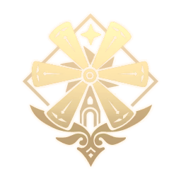

| Изображение |
Название |
Описание |
|  |
Мондштадт |
Мондштадт (нем. Mondstadt Мондстадт, «Лунный город») — один из семи регионов Тейвата и первый, куда Путешественник прибывает в поисках своего потерянного родственника. Это город-государство, который поклоняется Анемо Архонту Барбатосу.
В Мондштадте, с самого его основания, ежегодно проводится фестиваль под названием Луди Гарпастум — праздник песен, вина и полёта, длящийся 15 дней.
Две тысячи шестьсот лет назад народ Мондштадта был разделен между двумя соперничающими силами: Королем Штормов, Анемо Архонтом Декарабианом, и Королем Севера, Андриусом. Андриус не мог повредить башню Декарабиана, которая была защищена свирепыми штормами.
В то время как Декарабиан защищал свой народ, он не давал им свободы; они не могли пройти через ветряные потоки, окружавшие город.
|